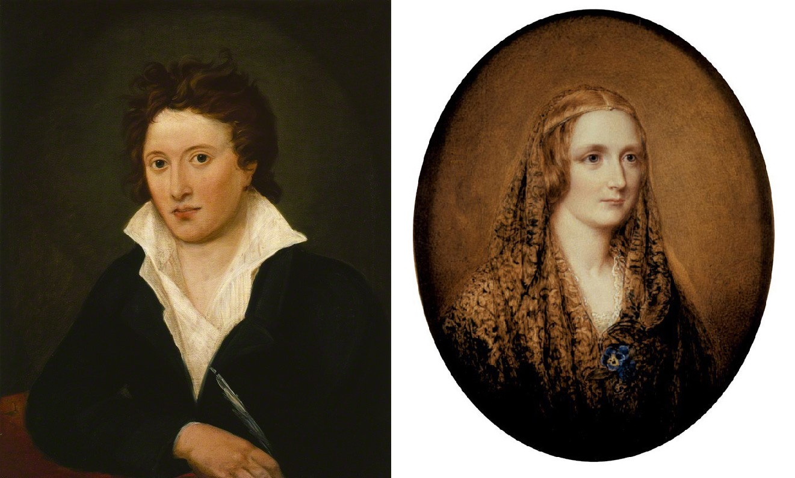

Edited by Kamiel Temmerman
 Percy Shelley and Mary Shelley
Welcome to the mini digital edition of Mary Shelley's Frankenstein. Made as a project for Text as Data II, taught at the University of Antwerp. This project was based on the Shelley Godwin Archive. To get more information about the way the enconding was done you can take a look at the encoding manual. For more information about this or any other works see the website of the Bodleian Library.
| 21r | 21v |
| 22r | 22v |
| 23r | 23v |
| 24r | 24v |
| 25r | 25v |